О проекте
«КЛЮЧАВТО» является официальным дилером многих известных марок, насчитывает 102 современных автоцентров и 31 автомобильный бренд. Обширная дилерская сеть «КЛЮЧАВТО» представлена автоцентрами в 19 крупных городах страны. В 2021 году заняла 108-е место в рейтинге 200 крупнейших частных компаний России по версии Forbes.
Что сейчас есть в аккаунте ТикТок (по состоянию на март 2022 года)
19 600 подписчиков
13.934.315 просмотров
512.462 лайка
10.533 комментария
90 381 репоста
Запуск проекта
Перед тем, как начать продвижение на новой площадке, мы изучили тренды, конкурентов и западный опыт, проанализировали аудиторию. На основе собранных данных составили подробный рубрикатор, в котором расписали 14 рубрик с примерами видео и своими оригинальными идеями, которые раскрывали каждую тему от сервиса до обзоров машин, лайфхаков и юмористических зарисовок.
Реализация и съёмки
После согласования рубрикатора приступили к производству контента. На каждую съёмку готовили актуальный контент-план, ориентировались на тренды и направления, которым необходимо придерживаться в подаче контента.
Решили выпускать по 2 видео в день – такое оптимальное количество помогло нам в минимальные сроки раскрутить аккаунт с нуля, а системе ТикТока, которая продвигает видео, подстроиться под нас и понять, какой аудитории интересен и нравится наш контент, как правильно нас продвигать.
В ходе съёмочного процесса мы тесно общались с отделом маркетинга, менеджерами по продажам, руководителями отделов, активно привлекали сотрудников к участию в съёмках видео. Иногда сами сотрудники предлагали идеи – так, совершенно случайно однажды на съёмках руководитель отдела продаж предложил переснять тренд с бывшей, мы сразу согласились, в итоге – заработали свой первый миллион просмотров именно на этом ролике.
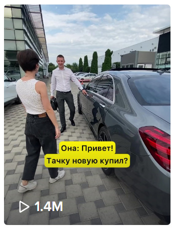
Ежемесячная аналитика
По результатам каждого месяца проводилась аналитика – почему одни видео набрали много просмотров, а другие – нет, какие видео были наиболее популярными и почему. На основе этого анализа делали выводы и предлагали варианты оптимизации производства. Проводили мозговые штурмы и придумывали новые инсайты, которые точно зайдут у аудитории. Писали свои уникальные сценарии, которые не повторяли тренды, но отвечали запросам пользователей.
Так, стало понятно, что, например, нашей аудитории нравятся интерактивы по угадыванию автомобилей – мы получали большие просмотры и много комментариев на подобных видео.
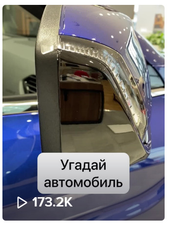
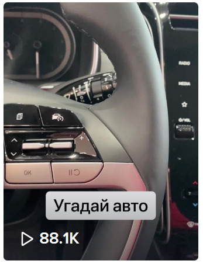
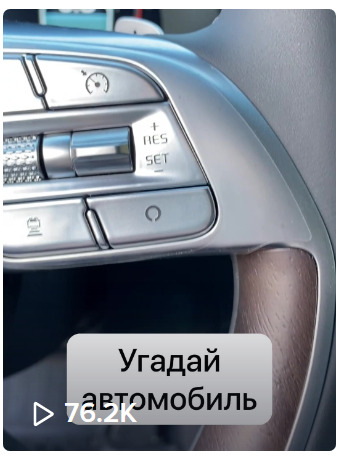
Также людям интересно смотреть ролики, которые описывают типичные жизненные ситуации, связанные с автомобилями или ситуации, в которых подписчикам хотелось бы оказаться.
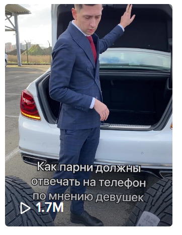
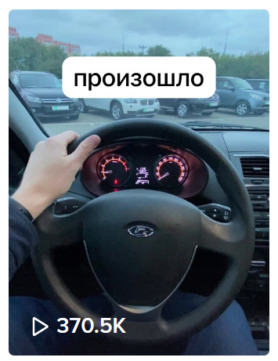
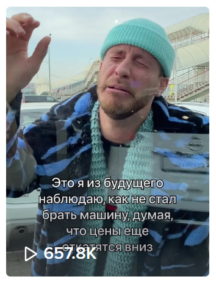
Несколько видео набрали от 1,5 до 3 миллионов просмотров, они дали большой толчок в развитии аккаунта.
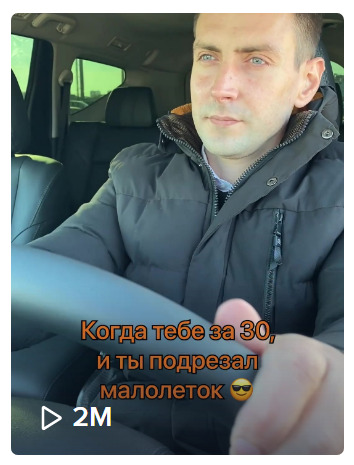
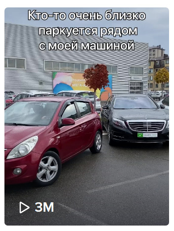
Новый рубрикатор и результаты работы
В ходе постоянного анализа контента мы сделали более глобальные выводы, в результате в конце 2021 года разработали и внедрили новый рубрикатор с наиболее эффективными рубриками.
В результате работы наши видео стали вдохновением для других аккаунтов с похожей тематикой, их бесплатно публиковали популярные паблики в Телеграме.
За неполных девять месяцев работы на аккаунт с нуля подписалось более 19 тысяч человек, уже в марте 2022 года мы перевыполнили KPI по подписчикам за год.
Отдельную благодарность хотим выразить руководству и команде «КЛЮЧАВТО». За профессионализм, свободу творчества и за энергию, благодаря которой мы вместе делаем такой классный проект.
Немного статистики
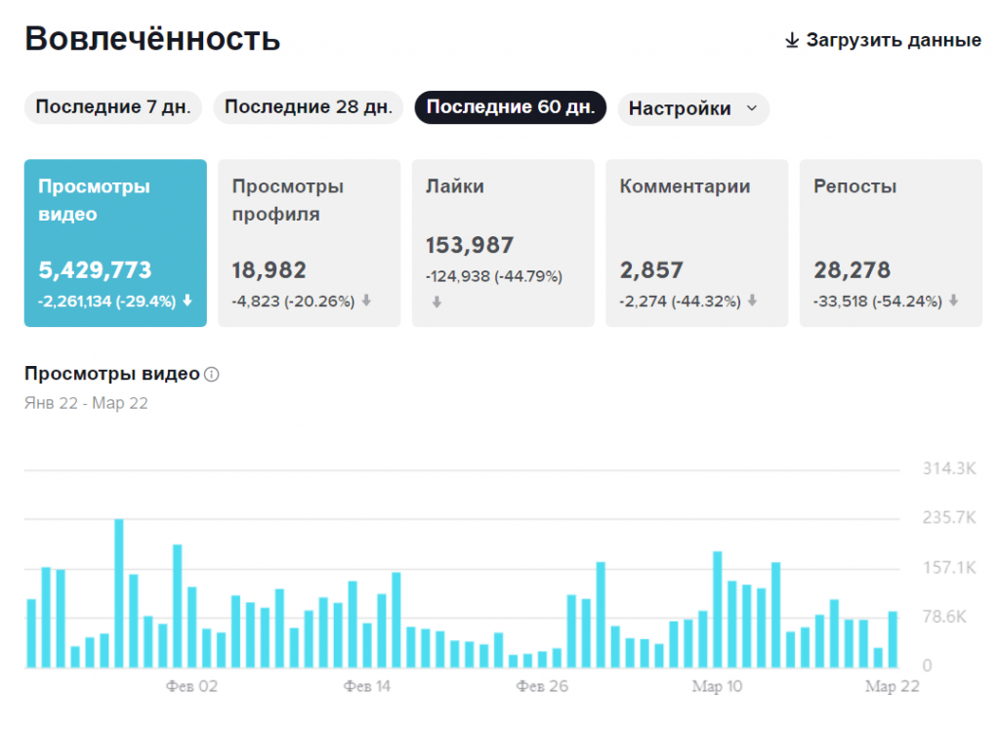
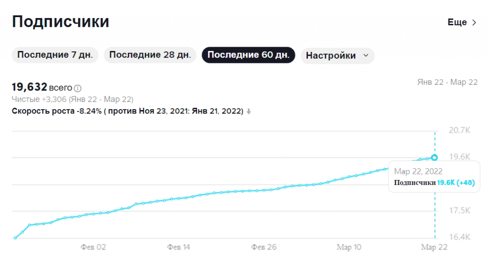
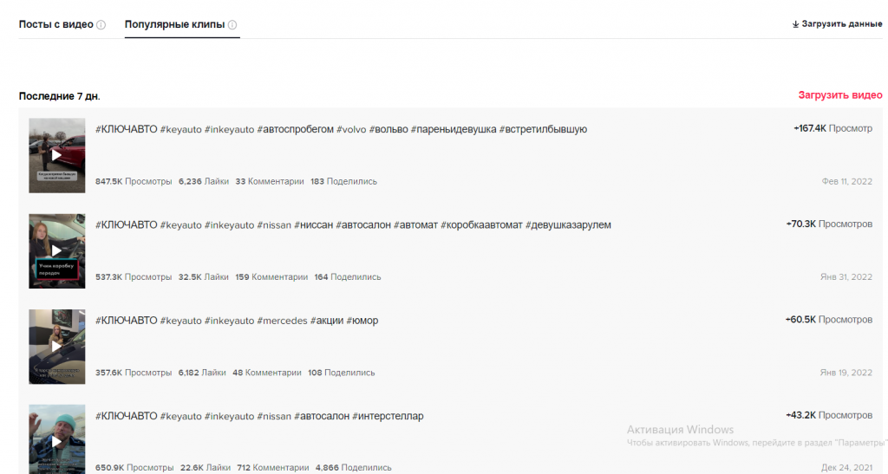